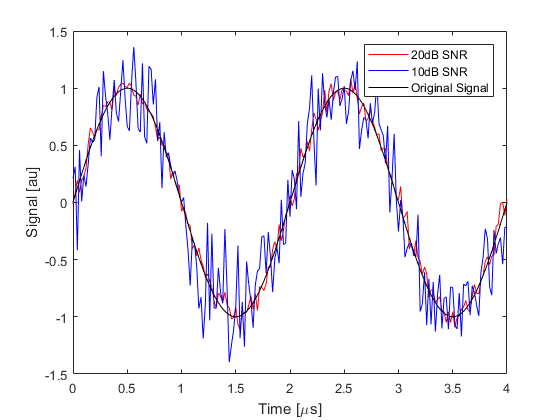

addNoise
Add Gaussian noise to a signal for a given SNR.
Syntax
signal = addNoise(signal, snr)
signal = addNoise(signal, snr, mode)
[signal, snr] = addNoise(signal, snr)
[signal, snr] = addNoise(signal, snr, mode)
Description
addNoise adds Gaussian random noise to a one dimensional input signal given the desired signal snr (signal to noise ratio) in decibels. By default, the magnitude of the added noise is calculated based on the RMS level of the input signal. For impulsive signals, the optional input mode should be set to 'peak' so the magnitude of the added noise is calculated based on the peak level of the input signal. An example of adding noise to a sinusoidal signal is given below.
Fs = 50e6;
dt = 1 / Fs;
t = 0:dt:200 * dt;
signal = sin(0.5e6 * 2 * pi * t);
noisy_signal_a = addNoise(signal, 20);
noisy_signal_b = addNoise(signal, 10);
figure;
plot(t * 1e6, noisy_signal_a, 'r-', t * 1e6, noisy_signal_b, 'b-', t * 1e6, signal, 'k-');
xlabel('Time [\mus]');
ylabel('Signal [au]');
legend('20dB SNR', '10dB SNR', 'Original Signal');

Inputs
signal |
input signal |
snr |
desired signal snr (signal to noise ratio) in decibels after adding noise |
Optional Inputs
mode |
'rms' (default) or 'peak' |
Outputs
signal |
signal with added noise |
snr |
snr of output signal |
Examples
See Also
randn